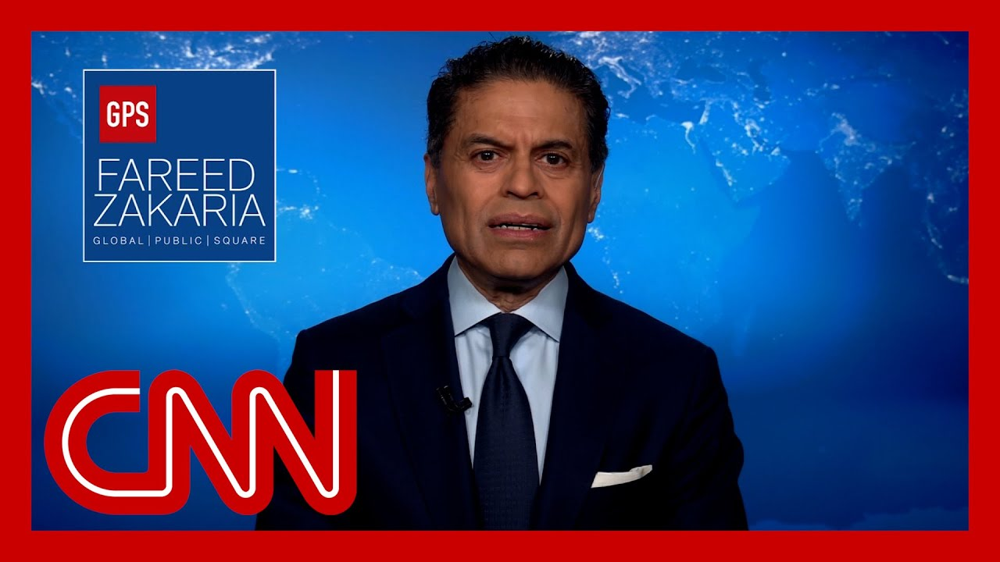

【法里德的观点：全球经济可能即将迎来一场完美风暴】
Summary: Here's my analysis of how Trump's tax cuts, rising deficits, and trade wars could trigger a global economic crisis, as warned by economist Kenneth Rogoff.
摘要： 本文分析了特朗普的减税政策、不断增长的赤字和贸易战如何可能引发全球经济危机，正如经济学家肯尼斯·罗格夫所警告的那样。

⏱️ Estimated Reading Time: 9 min
Here's my take.
这是我的观点。
As the White House continues to take up all our attention with its ongoing tariff war with the world, a little ways down Pennsylvania Avenue, Congress is preparing a budget bill that could prove to be almost as consequential if it renews Trump's 2017 tax cuts and enacts all his newly proposed ones and does not cut spending.
当白宫因其与全球的持续关税战而占据我们所有注意力时，国会正在准备一项预算法案，如果该法案延续特朗普2017年的减税政策并实施其所有新提议的减税措施且不削减开支，其影响可能同样重大。
They will add up to $9 trillion to the national debt over ten years, according to the nonpartisan Peter G. Peterson Foundation.
根据无党派的彼得·G·彼得森基金会的说法，这些措施将在十年内使国家债务增加高达9万亿美元。
At that point, America would likely be running among its largest deficits as a percent of GDP in history, and that's in peacetime with no pandemic.
到那时，美国可能会面临其历史上和平时期且无疫情情况下最大规模的赤字（占GDP的百分比）。
At the same time, Washington is raising tariffs on almost all its imports.
与此同时，华盛顿正在对几乎所有进口商品加征关税。
We may have the makings of a perfect storm in the global economy.
我们可能正在酝酿一场全球经济的完美风暴。
That's what Kenneth Rogoff, a famous Harvard economist, worries about.
这正是哈佛大学著名经济学家肯尼斯·罗格夫所担忧的。
One of his best books, presciently warned about the dangers of a financial crisis.
他的一本畅销书曾预见性地警告了金融危机的危险。
It was published in 2009 while the global financial crisis was unfolding, but of course was researched and written well before it.
该书出版于2009年全球金融危机爆发期间，但其研究和写作当然远早于此。
His new book, Our Dollar Your Problem.
他的新书《我们的美元，你们的问题》。
Worries that we are jeopardizing the dollar's pivotal role in the global economy.
担忧我们正在危及美元在全球经济中的关键作用。
That should matter to all Americans because we benefit enormously from what has been described as the exorbitant privilege of having the world's reserve currency.
这对所有美国人来说都至关重要，因为我们从被称为“过度特权”的全球储备货币地位中获益巨大。
Rogoff explained to me that it allows us to borrow more cheaply, whether it's mortgages, car loans or credit card debt.
罗格夫向我解释说，这使我们能够以更低的成本借贷，无论是房贷、车贷还是信用卡债务。
And he estimated that the discount Americans get on their loans because of the dollar is probably between half a percent to 1%.
他估计，由于美元的地位，美国人在贷款上获得的折扣可能在0.5%至1%之间。
It's sometimes hard to detect a signal amidst the buzz of noise that surrounds us these days.
在当今围绕我们的喧嚣中，有时很难察觉到信号。
But Rogoff says focus on interest rates.
但罗格夫说，要关注利率。
The key fact is that after decades of falling and low interest rates, they are now up to historically normal levels and will stay up.
关键事实是，在经历了数十年的下降和低利率之后，利率现已升至历史正常水平并将保持高位。
That is what makes America's debt burden dangerous.
这正是美国债务负担变得危险的原因。
Interest on the debt now approaches $1 trillion per year mortal defense spending.
债务利息现在接近每年1万亿美元，相当于国防开支。
The economic historian Neil Ferguson has suggested that when this happens, a great power risks that it will no longer be great.
经济历史学家尼尔·弗格森曾指出，当这种情况发生时，一个大国可能会面临不再伟大的风险。
Rogoff predicts an economic storm and that it will be a good bit sooner because of Trump's economic policies.
罗格夫预测一场经济风暴即将到来，而且由于特朗普的经济政策，这场风暴会来得更快。
He believes that unless these policies are drastically reversed, there is a 50% or more chance of a financial crisis, or spiraling inflation, or both.
他认为，除非这些政策被彻底逆转，否则发生金融危机、恶性通胀或两者兼有的概率将达到50%或更高。
By the end of this presidential term, some of the pressures we face are because of events outside America's control.
到本届总统任期结束时，我们面临的部分压力源于美国无法控制的事件。
Other countries have always resented the dollar's exalted status, especially once America began to weaponize it.
其他国家一直对美元的高位地位不满，尤其是当美国开始将其武器化之后。
Washington has promiscuously imposed sanctions on dozens of countries, often unilaterally, and these sanctions work only because of the dollar's special status.
华盛顿随意对数十个国家实施制裁，通常是单方面的，而这些制裁之所以有效，仅仅是因为美元的特殊地位。
The Europeans, the Chinese, the Russians, and mostly every large country is quietly making efforts to wean themselves off their dependance on the dollar.
欧洲人、中国人、俄罗斯人以及几乎所有大国都在悄悄努力减少对美元的依赖。
It's a slow process, but it is moving in only one direction away from the dollar.
这是一个缓慢的过程，但它正朝着唯一的方向——远离美元——发展。
And while there's no single substitute for America's currency, Rogoff believes that the dollar will lose share to a basket of other currencies as well as alternatives like Bitcoin.
尽管没有单一货币可以替代美元，但罗格夫认为，美元的市场份额将被一篮子其他货币以及比特币等替代品蚕食。
This is not all about Trump.
这并不全是特朗普的错。
Rogoff argues that there has been a bipartisan recklessness in America's fiscal policy for decades, with Republicans cutting taxes and Democrats spending both without restraint.
罗格夫认为，几十年来，美国的财政政策一直存在两党共同的无节制行为，共和党减税，民主党花钱，双方都毫无节制。
It is worth noting, however, that the math is clear.
然而，值得注意的是，数据是明确的。
Tax cuts are responsible for the vast majority of the increase in the debt to GDP ratio over the last 25 years.
过去25年债务与GDP比率上升的大部分原因在于减税政策。
He is also profoundly worried that the Federal Reserve's independence is being compromised, both from the right and from the left.
他还深感担忧的是，美联储的独立性正受到来自左右两派的损害。
Though it's worth noting that Trump is the first president to routinely attack, the fed threatened to fire its chair and challenge the legality of independent institutions like it in court.
不过值得注意的是，特朗普是第一位经常攻击美联储的总统，他曾威胁解雇其主席并在法庭上挑战美联储等独立机构的合法性。
Rogoff told me much of the dollar's role comes from our reputation for good, stable, predictable policy, from the Fed's independence, from political pressures, from our trustworthiness as the world's superpower.
罗格夫告诉我，美元的地位很大程度上源于我们在良好、稳定、可预测的政策方面的声誉，源于美联储的独立性，源于我们作为世界超级大国的可信度。
You can't trash all that and expect the dollar to be unaffected.
你不能破坏这一切，却期望美元不受影响。
There are solutions, of course, but none are painless.
当然有解决方案，但没有一个是无痛的。
Doge has been an abject failure.
“Doge”一直是一个彻底的失败。
Of the $165 billion it claims to have saved.
它声称节省了1650亿美元。
Estimates of its actual verifiable savings are around 65 billion, and even that might be an exaggeration.
实际可核实的节省估计约为650亿美元，即便如此也可能被夸大了。
Anyway. That is 3% or less of the 2 trillion.
无论如何，这只是2万亿美元的3%或更少。
Elon Musk confidently predicted he would cut from the federal budget.
埃隆·马斯克曾自信地预测他将从联邦预算中削减这部分开支。
That leaves us where we always were.
这让我们回到了原点。
The path to reducing the deficit is to cut the big programs like Medicare, Social Security and Defense, and also to raise taxes.
减少赤字的途径是削减医疗保险、社会保障和国防等大型项目，同时提高税收。
We are on track to do the opposite.
而我们正在朝着相反的方向前进。
Enact huge tax cuts and jack up defense spending by.
实施大规模减税并大幅增加国防开支。
If Trump's proposal is accepted.
如果特朗普的提议被接受。
A whopping 13%, Rogoff says.
罗格夫说，增幅高达13%。
We have been smart and lucky for the past few decades, which has allowed us to run up deficits with no visible costs.
过去几十年我们既聪明又幸运，这使得我们能够在没有明显代价的情况下累积赤字。
But our economic policy is now, quote, dumb.
但我们的经济政策现在，用他的话说，“愚蠢”。
The worst in my lifetime, unquote.
“是我一生中最糟糕的”。
And our luck might have run out.
而我们的运气可能已经用完了。
Go to cnn.com/fareed for a link to my Washington Post column this week.
访问cnn.com/fareed获取我本周《华盛顿邮报》专栏的链接。
And let's get started.
让我们开始吧。